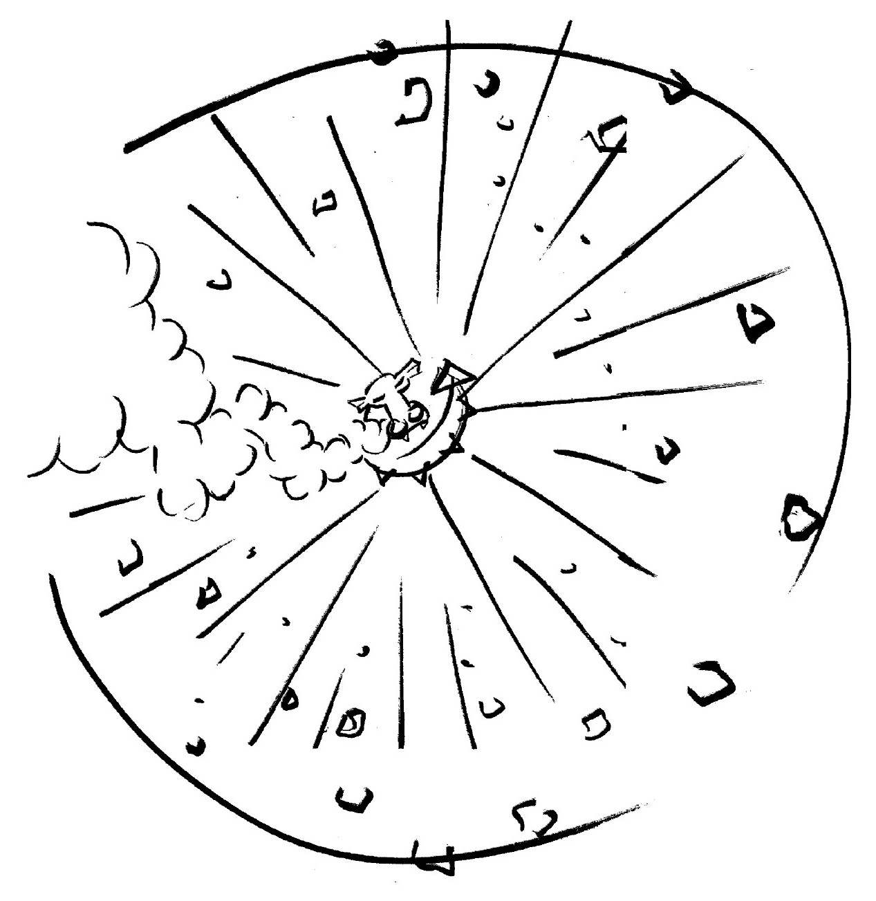
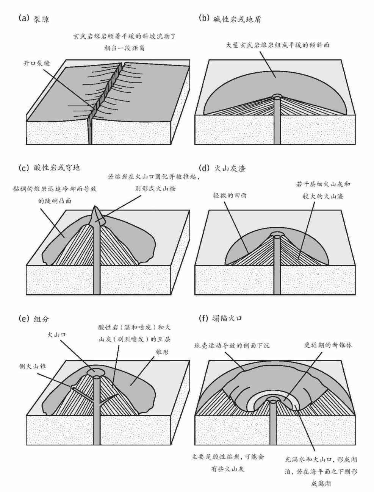
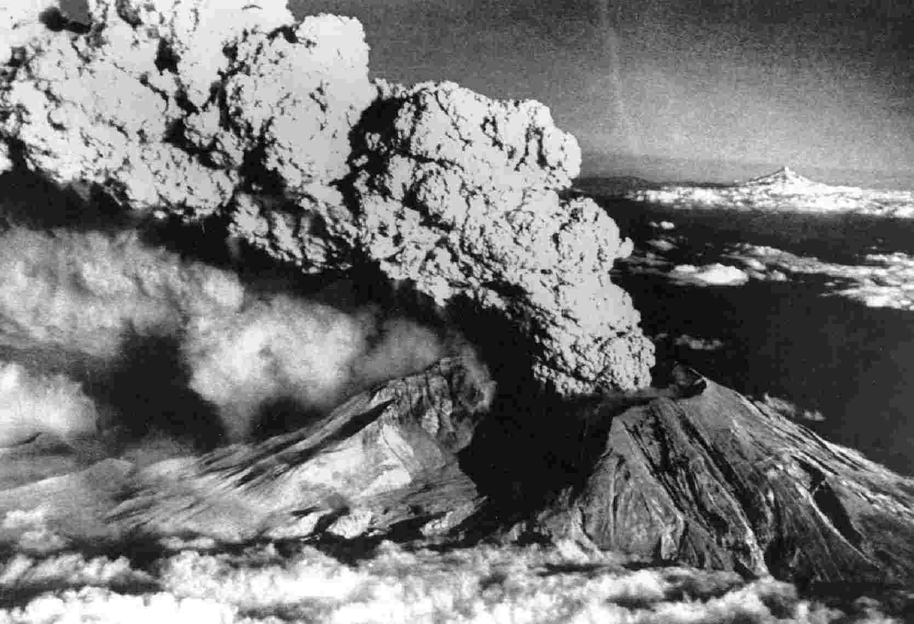
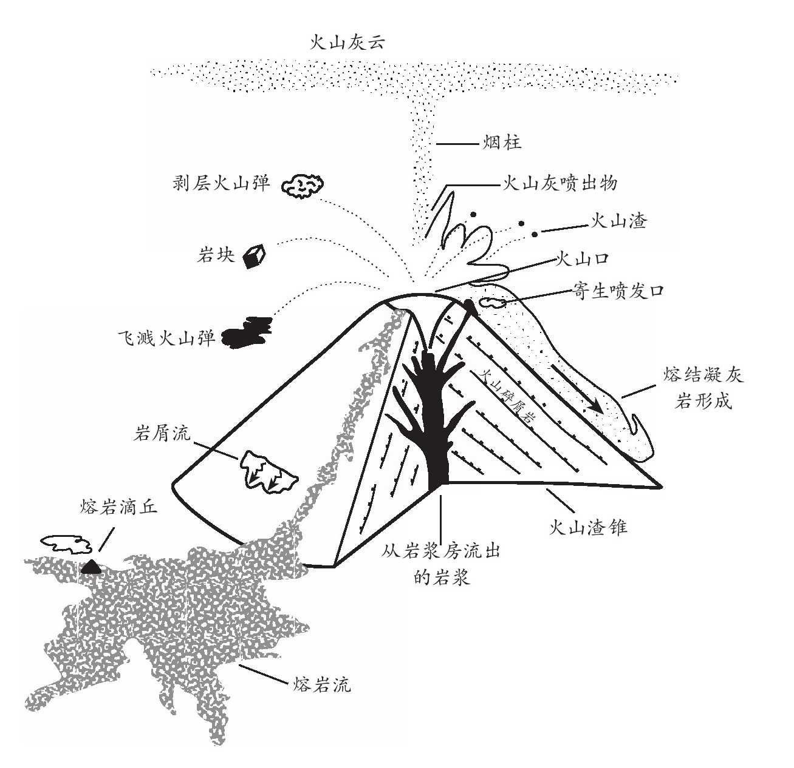
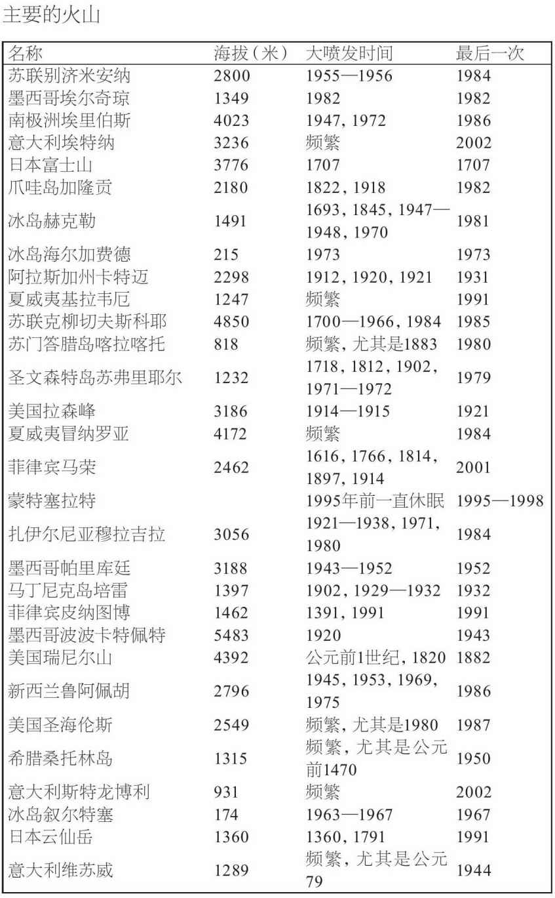

永无休止的构造板块运动、山脉的抬升与侵蚀，以及生物体的演化，这些过程都只有在地质学的“深时”跨度上才能够得到充分认识。但某些正在我们这个星球上进行的过程可以在浓缩的刹那间把这一切在我们眼前铺陈开来，在便于人类观察的时间跨度上改变地貌、摧毁生命。那就是火山。把一个活火山地图叠加在世界地图上，可以清楚地看到构造板块的分界线，此二者的联系显而易见。例如，太平洋周围的火山带显然与板块边界相关。但流入这些火山的熔融态岩石是从哪儿来的？火山为何彼此不同：有些火山温和喷发，其熔融岩浆细水长流，而另一些的喷发则是毁灭性的爆炸？还有，某些火山远离任何明显的板块边界，例如夏威夷诸火山就位于太平洋中间，这又是怎么回事？
历史上不乏火山喷发目击者的记录和对这种现象的解释，其中有些是神话，有些是空想，但还有一些却惊人地准确。小普林尼 [33] 有关公元79年维苏威火山喷发的描述就是一份较为准确的记录。那场火山喷发毁灭了庞贝和赫库兰尼姆两座古城，他的舅舅老普林尼也不幸罹难。但在很长的历史时期中，人们并不了解火山喷发的原因，往往会认为火山喷发是火神或女神，如夏威夷女神佩蕾的杰作。在中世纪的欧洲，人们认为火山是地狱的烟囱。后来，有人提出地球是一颗逐渐冷却的星球，内部还有些残余的星星之火，通过裂隙的体系彼此相连。19世纪，我们如今所知的火山岩被普遍认为来自海洋的覆层，这就是所谓的水成论者，其理论与火成论者截然相反，后者认为这些岩石都是曾经熔融过的。在火成论者的理论发展和普及之后，很多人认为地球内部一定是熔融态的，这种观念直到地震学初露端倪之后才最终被抛弃。谜题之一是火山岩可以有不同的组分；有时甚至从同一个火山喷发出来的火山岩也是如此。查尔斯·达尔文等人首先提出，密度高的矿物结晶析出，沉入岩浆，所以熔融物的组分会发生变化。达尔文对加拉帕戈斯群岛火山岩的观测结果为此说法提供了证据。至于达尔文提出的有关大陆漂移的想法，则直到20世纪中叶阿瑟·霍姆斯提出有关固态地球地幔中存在对流的想法时，才算是朝着科学的真相迈出了坚实的第一步。
了解火山的关键在于了解岩石是如何熔融的。首先，岩石不必完全熔融，因而虽说熔融的岩石造就了熔融态的岩浆流体，大部分地幔仍保持固态。这意味着这种熔融物的组分不一定与大部分地幔的组分相同。只要表层岩的矿物颗粒相交的角度——所谓二面角——足够大，岩石就像多孔的海绵一样，熔融物也就会被挤出去。计算结果显示出它如何流动聚集，并以类似波的形式相当迅速地上升，在表面生成熔岩；一般来说，当熔岩达到一定数量，火山就会喷发。
熔融并不一定需要温度上升，它也有可能是压力下降的结果。因此，炙热的固态地幔物质组成的地幔柱在其上升过程中，所承受的压力下降，就会开始熔融。在地幔柱的例子中，这种情况在地下极深处即可发生。夏威夷喷发的玄武岩中氦同位素的比率表明，其生成于地下150公里左右。那里的地幔主要由富含矿物橄榄石的橄榄岩组成。与它相比，喷发而出的岩浆含有较少的镁和较多的铝。据估计，仅需4%的岩石熔融，便可产生夏威夷的玄武岩。
在洋中脊系统之下，熔融发生的位置要浅得多。这里几乎没有地幔岩石圈，炙热的软流层靠近表面。这里较低的压力可导致更大比例的岩石熔融，或达20%-25%，从而以适当的速率提供岩浆来维持海底扩张，并生成7公里厚的洋壳。大部分洋脊喷发都无人察觉，因为它们发生在2000多米深的水下，迅速熄灭，形成枕状熔岩。但地震学研究表明，在部分洋脊，特别是在太平洋和印度洋，洋底数公里之下存在岩浆房，不过也有证据表明大西洋中脊下也有岩浆房存在。在那里，地幔柱与洋脊系统叠合，冰岛即是一例；那里产生的岩浆更多，洋壳也更厚，乃至升出海面形成了冰岛。
夏威夷大岛不仅居民热情好客，那里的火山也一样十分友善。希洛镇附近有一座4000米高的冒纳罗亚（Mauna Loa）火山，但若说镇子背后这座火山有可能爆发，其威胁可能还不如远处的地震引发的海啸。希洛镇的北面和西面坐落着夏威夷群岛的其他岛屿和天皇海山链，描摹出太平洋板块横越其下地幔柱热点的漫漫征途。夏威夷大岛的南方是罗希海底山，这是夏威夷火山中最新的一个。迄今为止，它还没有露出太平洋水面，但已经在洋底建起了一座玄武岩高山，不久以后几乎一定会变成岛屿浮出水面。夏威夷的熔岩流动性很强，可以覆盖大片区域，而不太可能形成非常陡峭的斜坡。这样的火山有时也被称为盾状火山，可以大范围溢流玄武岩。某个特定的岩浆流往往会生成一个环绕岩流的隧道，外壳虽然凝固，内部仍然继续流淌着岩浆。岩浆断流之后，排干了的隧道便保持着中空状态。
最后一座停止喷发的大火山——冒纳凯阿火山（Mauna Kea）是地球上晴天最多的地方之一，也是一个国际天文观测台的所在地。我到那里游历的一天晚上，通过望远镜看到了位于冒纳罗亚火山侧面的普奥火山口的一次剧烈喷发。第二天，我乘坐直升机低空飞越了刚刚喷发出来的熔岩流。打开舱门，能够感受到炙热岩浆的辐射热，有好几处仍在流淌着熔岩，空气中有一丝硫磺的气味。但一切看来都很安全，甚至在火山口上方盘旋也是如此，不过要避开烟气与蒸汽的热柱。附近的基劳亚破火山口现今有过多次火山喷发，但那里竟然还有一个观测台和观景台。每隔几个星期，游客就能目睹一次新的喷发，起先往往能看到一片火幕，伴随着许多沿着裂缝排列的灼热岩浆喷泉。火中并无一物燃烧，但通过灼热奔流的熔岩释放的火山气导致白热的蒸汽喷射到数十米甚至数百米的空中。火山喷发可能只持续几个小时。尽管有高空喷射，但由于熔岩的高度流动性，火山的喷发并不是特别容易爆炸。附近火山观测台的火山学家们可以穿着热防护服接近熔岩，甚至火山口。他们很可能已经通过灵敏的测震仪网络以及测量岩浆上升流所带来的地心引力变化，探测到火山口的岩浆上升。有时，他们还能够从火山口直接采集未经污染的火山气样本并测量熔岩的温度。火山喷发的温度大约是1150℃。
火山喷发的性质取决于岩浆的黏性及其所含的溶解气体和水的容量。在喷发早期，地下水全部会被飞速闪蒸成为水蒸气。随着压力的释放，气体从溶液中挥发出来，迅速扩张，有时甚至会爆炸。四下流淌的玄武岩中所含的气体适量，就能产生夏威夷的火喷涌现象。如果气体含量更大，会携带着细碎的火山灰和火山渣等固态物质。当岩浆仍含有大量气体时，初期的喷发会更加剧烈。如果它有时间在相对较窄的岩浆房沉积下来，表现就会温和得多。有时，气体和火山灰高高升入空中，导致火山灰在空中大面积扩散。公元79年，人们目睹的维苏威火山喷发即是如此；这种现象被称为普林尼式火山喷发，得名于普林尼对其舅舅遇难情景的描述。

图17 以形状（不按比例尺）划分的主要火山类型
这样的喷发可以生成很多种不同的火山岩。火山灰和火山渣在落地之前质地坚硬，但在落地后则会形成松软的凝灰岩层。如果碎屑仍是熔融态的，则会形成熔结凝灰岩。靠近火山口的地方，会有大块岩浆被抛出。如果它们在落地时还是熔融状态，就会形成飞溅的炸弹，看出去有点像牛粪团。如果仍在飞行中的熔岩炸弹在空中凝结一层固态外壳，就会形成一枚剥层火山弹，看上去更像是一大块发酵面包。迅速猝熄的熔岩可能会形成一种被称作黑曜岩的火山玻璃。有时熔岩固化时内部仍有气泡，即所谓的气囊。有时熔岩中的气泡会形成泡沫，这样生成的浮岩密度很低，能够漂在水上。熔岩流的表面可能非常粗糙，像煤渣一样，在夏威夷人们称之为“啊啊”（a a）熔岩。（这是夏威夷语的一个单词，而不是人试图走过熔岩时发出的尖叫！）流体熔岩流形成的一层薄皮可能会起皱变成流线，生成绳状熔岩。有时会拉出细股的熔岩，这种效果有时被称为“佩蕾的发丝”。
只要避开火喷涌和快速流动的熔岩，夏威夷岛的火山喷发还是相当安全的。但大多数火山可不是这样。太平洋大部分都在火圈包围之中，那些火山的性情可要暴烈得多。当海洋板块下潜进大陆或岛弧的潜没带下，就形成了所谓的成层火山。这些火山常常是风景明信片的主角。日本富士山就是其中之一，它有着陡峭的圆锥形斜坡，积雪盖顶，火山口终年烟雾缭绕。但人们往往被这类火山的美丽外表所迷惑，对其险恶的行为视而不见。它们因频繁的地震和突然间剧烈的火山喷发而臭名昭著，比如日本的云仙岳火山和菲律宾的皮纳图博火山均在1991年显露出狰狞面目。它们之所以被称为成层火山，是因为熔岩、火山灰或火山渣交替的分层结构，喷涌所及的范围远大于山峰本身。
它们之所以比夏威夷火山表现暴戾，是因为岩浆不是来自地幔的清洁新生物质。其地下的下沉物质是旧洋壳，其中浸透了水，既有存在于气孔和裂隙中的液态水，也有与含水矿物结合的水。随着板块下潜，因为深度，可能也是摩擦力的作用，水被加热了。水的存在降低了熔融点，因而发生了部分熔融。压力非常大，以至于水在熔融物中很容易溶解，为其润滑，从而使得这部分岩浆向上挤压通过上面的陆壳。在它接近地表的过程中，压力下降，水分开始变成蒸汽逸出。这一过程非常迅速和剧烈，很像在充分摇动一瓶香槟之后拔去塞子，气体逸出的情形。
在上升过程中，岩浆会聚积在岩浆房中，直至积聚足够的压力喷发出去。在此期间，致密的矿物会固化并下落到岩浆房的底部。这些矿物，尤其是铁化合物，是令玄武岩变得黝黑致密的物质。留待喷发的熔融物颜色较浅，所含的氧化硅更多——在某些情况下含量高达70%-80%，而玄武岩中的氧化硅含量最多只有50%。它所形成的岩石被称为流纹岩和安山岩，是日本和安第斯山脉等地特有的岩石。喷发十分剧烈，不仅是由于含水量较高，还因为这种富含氧化硅的熔岩的黏性也高得多。它们不易流动，气泡不容易逸出。这种熔岩无法像夏威夷火山喷发那样形成喷射，只会一路轰鸣，喷薄而出。
近年来最著名的一次火山喷发就是一座这种类型的火山。圣海伦斯火山位于美国西北的华盛顿州，那里是太平洋板块潜没之处。1980年初，那里还是一个松林湖泊环绕的美丽山脉，也是度假胜地。自1857年以来，它几乎没有过什么活动的迹象。然后，就在1980年3月20日，一系列小地颤累积成4.2级的地震，火山再度苏醒过来。地颤持续增加，引发了小型的山崩，直到3月27日，顶上火山口发生了一次大喷发，圣海伦斯火山开始喷涌出火山灰和蒸汽。盛行风将暗色的火山灰吹向一侧，另一侧则被白雪覆盖。火山呈现出黑白相映的景象。
截至那时，还没有熔岩喷发出来，从火山口逸出的只是蒸汽和被吹出的火山灰。但逸出的蒸汽是预警信号，表示火山下的炙热岩浆上升。地震活动继续，但测震仪也开始记录有节奏的连续地面震动，与地震的大幅震荡截然不同。这种所谓的谐波震颤据信是由火山下的岩浆上升而产生的。到5月中旬，所记录的地震达到一万次，在圣海伦斯火山北侧还出现了显著的隆起。地球物理学家向置放在隆起周围的反射器发射激光束，以此来测量隆起的速度，它以每天1.5米的惊人速度向北推进。到5月12日，隆起的某些部位比岩浆侵入开始前高了138米多。火山几乎被楔成两半，进入了极度不稳定的危险状态。
5月18日星期天一大早，基思和多萝西·斯托费尔乘坐一架小飞机越过火山上空时，突然注意到岩石和积雪向火山口内部滑落。几秒之内，顶部火山口的整个北侧开始移动。隆起部分在大山崩中塌陷下去。那情景就像拔出了香槟瓶口的塞子。里面的岩浆暴露在空气中。几乎瞬间便发生了爆炸。斯托费尔夫妇赶紧驾机俯冲以便提速逃生。美国地质勘探局的戴维·约翰斯顿就没那么走运了。在他使用无线电波从火山以北10公里处的观测站发送出最后一道激光束测量值之后一个半小时，北侧山坡塌陷下来，爆炸朝着他席卷爆炸开始的时间比山崩晚了几秒，但爆炸很快就占据上风。它散开的速度超过了每小时1000公里。在方圆12公里范围内，树木不但倒地，还被卷走。生灵涂炭，人造物荡然无存。30公里开外的树木也被掀倒，只在低洼处有零星的小片林子得以幸存。甚至在更远的野外，树叶也被热量烤焦，枝干惨遭折断。

图18 1980年美国华盛顿州圣海伦斯火山喷发是近年来最壮观的景象之一，也留下了最精确完整的记录。火山灰和烟雾升腾近20公里进入大气层
而去。算他在内，共有57人在此次火山喷发中遇难。
横向爆炸过后不久，一道笔直的火山灰和蒸汽柱开始上升。不到10分钟就升到了20公里之高，并开始扩展成为典型的蘑菇云。盘旋的火山灰颗粒产生了静电，闪电造成了很多森林火灾。大风很快将火山灰吹到东面，航天卫星得以环绕地球跟踪其踪迹。火山灰落在美国西北部的大部分地区，厚度在1-10厘米之间。在9个小时的剧烈喷发期间，大约有5.4亿吨火山灰落在5.7万平方公里的土地上。
然而，这类火山喷发的另一个危险是所谓的火山碎屑流。它们是由爆炸散落的岩石或岩浆颗粒组成的，在一团高温气体中，以每小时数百公里的速度横扫开去。其温度和速度足以致命。1902年，西印度群岛马丁尼克岛上的培雷火山喷发，火山碎屑流扫荡了圣皮埃尔市，全市3万居民几乎全部罹难。颇有讽刺意味的是，两名幸存者中，有一位是由于被单独监禁在通风不佳的厚墙牢房里而活了下来。圣海伦斯火山的火山碎屑流并不比山崩碎片所到之处更远，然而在某些地方，喷发物质抵达古老的湖底，热量仍足以将湖水闪爆成蒸汽，那情形就像是次级火山喷发。公元79年，或许就是火山碎屑流摧毁了古城庞贝。
圣海伦斯火山本身的高度比喷发前矮了400米，中间产生了一个大大的新火山口。1988年又有数次爆发式喷发，1992年也有一次，但都不如第一次那样壮观。如今，山上到处都是科学仪器，它们完全能够捕捉到进一步活动的迹象。
圣海伦斯火山的喷发或许看似可怕，但与史上和史前其他火山喷发相比，还算是小规模的。这次喷发将1.4立方公里的物质抛到空中。相比之下，1815年印度尼西亚的坦博拉火山喷发喷射出大约30立方公里的物质，而公元前5000年，美国俄勒冈州马札马火山的一次喷发产生了大约40立方公里的火山灰。1883年，喀拉喀托岛（位于爪哇岛西面，而非电影 [34] 片名中所说的东面）喷发，在洋底留下了一个290米深的火山口。共有3.6万人伤亡，大多数溺死于随后的海啸，在海啸中，40米高的巨浪将一艘蒸汽船深深搁浅在丛林中。大约公元前1627年，轮到爱琴海的桑托林岛——或称希拉岛——喷发。那次喷发发生于弥诺斯文明 [35] 青铜时代的鼎盛时期，很可能成为这一文明衰败的原因之一，也是关于失落的亚特兰蒂斯大陆的传说的来源。在地质学的时间尺度上，这些也不过是一系列剧烈喷发中距今最近的几次而已。
人们关于火山的刻板印象，无非是圆锥形的山峦坐落在水池一样的岩浆房上，从顶上火山口中喷出岩浆，然而事实上，很少有真实的火山与这种刻板形象相符。西西里岛的埃特纳火山是学界研究最全面的火山之一，它显然要复杂得多。这是一座非常活跃的火山，地质年龄很可能只有大约25万年。当然它不可能一直持续着近30年来人们所观测到的活跃程度，否则它应该更大一些。它与维苏威火山以及它北面的武尔卡诺岛和斯特龙博利岛等火山岛不同。那些是由爱奥尼亚海海底的潜没作用所提供的喷发物质组成的成层火山。与之相反，埃特纳火山可能源自地幔柱。但它似乎天性善变。对不同年代的熔岩组成的测量显示，近来它开始呈现出更多前一种火山的特性，也就是说，更像是它北方那些由潜没作用注入物质的火山了；此外，其喷发的性质看来也的确在改变，变得越来越剧烈，具有潜在的危险。
在埃特纳这样的火山下面进行测量和研究会非常复杂。并不存在什么现成的中空管道系统坐等岩浆的到来；岩浆必须经由阻力最小的路线强行上升。在地幔柱中，首选路线很可能是易于被泪滴形的上升岩浆块推开的低密度物质柱。在更坚硬的地壳中，岩浆必须找到一条穿过裂隙的路线。大型火山非常重，会使其所在的地壳超载，形成同心裂纹网。火山活跃期停止后，它会沿着这些裂纹塌陷，生成一个宽阔的破火山口。随着岩浆继续上升，它会强行进入裂纹，形成同心的圆锥形薄板或环状岩墙的脉群。火山内部的岩浆上升会造成其隆起，并爆裂成一系列小型的地颤。在埃特纳火山这个例子中，顶上火山口显示出近乎持续的活跃度。我曾在静止期爬上陡峭而疏松的火山渣锥向内窥视。即使在那时，地面摸上去仍是温热的，空气中也有硫磺的气味。火山口喷发出水蒸气，发出的声音与我想象中巨人或恶龙的鼾声没有什么不同。
有时，恶龙醒来，火山口边缘便不再是安全的立脚之所。喷发开始时，直径达一米之大的炙热岩石块可能会被抛到空中。1979年的一次火山喷发便是如此开始的，但随后被一场大雨浇得陷入沉默，导致了火山口内侧的滑塌。然而，压力累积起来并引发了爆炸。不幸的是，当时火山口周围还站着很多游客。那场喷发中有30人受伤，9人遇难。英国公开大学的约翰·默里博士回忆起1986年的另一次火山喷发，当时他在观察一场貌似相当普通的喷发，整个下午火山活动缓慢。有火山弹落在火山口外200米范围内，地质学家们还很安全。随后，火山弹的落地范围突然扩大到逾2公里。大块的岩石从地质学家的头上呼啸而过，落在他们身旁。在统计学意义上，被岩石击中的概率并不大，但约翰·默里说身临其境的感觉可没这么淡定。

图19 喷发中的复合火山——如埃特纳火山——的一些主要特征
约翰·默里及其同事多年来一直在观测埃特纳火山，他们越来越熟悉喷发来临前的征兆。他们会使用测量技术和全球定位系统来定位山腹因其下的岩浆上升而发生的轻微隆起，还会监测地表裂缝被迫张开而引发的地颤。重力测量可以显示岩浆上升时的密度。喷发平静下来之后，测量者还会监测山坡，他们特别关注的是卡塔尼亚城 [36] 上方的东南侧陡峭山坡。1980年代初期，该山坡有些地段在一年之内下沉了1.4米，有人担心山坡会就此塌陷，甚至会降低内部岩浆所受的压力，从而引发像圣海伦斯火山喷发时那样的横向爆炸。或许早在公元前1500年左右就已经发生过这种情况，迫使古希腊人放弃了西西里岛东部。
火山喷发一般从顶上火山口开始，但是，一旦初期的气体释放，岩浆便会强行穿过山腰的裂隙，有时会危及附近的村落。人们曾试图通过开凿另外的通道和铲平土方来让岩浆流转向，或者用水淋浇甚或爆破来阻止岩浆流。这些方法有时可以挽救家园，有时却无济于事。1983年，一道岩浆一直流到接近地质学家居住的萨皮恩札饭店外才停了下来。时至今日，与山峦的威力相比，人类压制火山力量的尝试仍然显得微不足道。
火山灰和参差不齐的岩浆流会以令人惊讶的速度迅速分解，产生富饶肥沃的土壤。健忘的人们总是聚集在火山周围，在那里建起农场、村落乃至城市。如今，监测火山，并在其内岩浆上升、喷发即将来临时至少获得某些警报都是可能的。但即使在那样的时刻，劝说人们离开有时也绝非易事。在维苏威火山下的那不勒斯湾这样人口密集的地方，及时疏散人群既不现实也不可能。在南美洲和其他地方那些不甚著名的火山，至今甚至没有学者对其作过任何冲击力方面的学术研究。

移动缓慢的岩浆流和更加致命的火山碎屑流并非仅有的危险。在喷发的火山周围聚集起来的尘埃和水蒸气的喷发云会造成大雨，若与火山上融化的雪水配合，会导致灾难性的泥石流或火山泥流。1985年，哥伦比亚的内瓦多·德·鲁伊斯火山就曾发生过这样的情况，泥石流沿山坡一路扫荡，造成大约22000人死亡。威胁甚至可能毫无行迹可觅。喀麦隆境内尼奥斯湖的深水中累积溶解了大量的火山二氧化碳。1986年的一个寒夜，湖面上致密冰冷的水体突然下沉，把富含气体的水带到湖面并释放了其中的压力。这就像打开一瓶充分摇动的苏打水一样，密度大于空气的气体突然释放席卷了山谷，导致附近村里的1700人在梦乡中窒息而死。
火山的力量或许无法阻挡，但通过审慎规划和仔细监测，人类可以学着相对安全地与之共存。